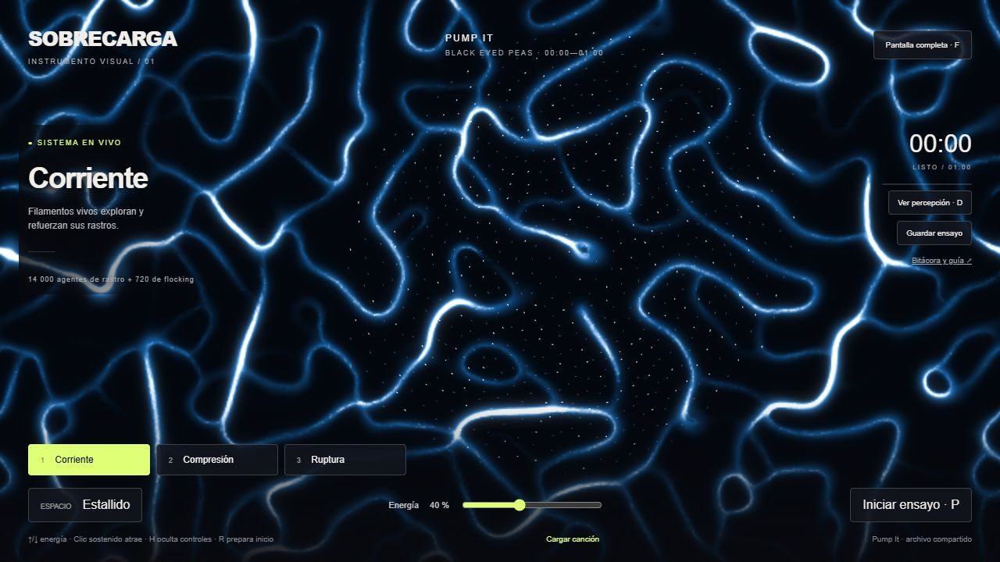
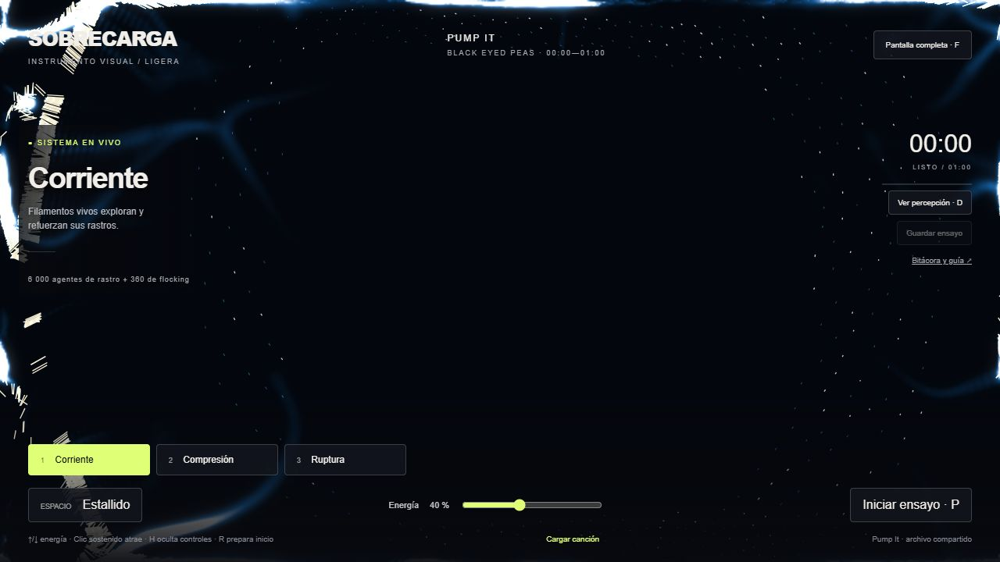
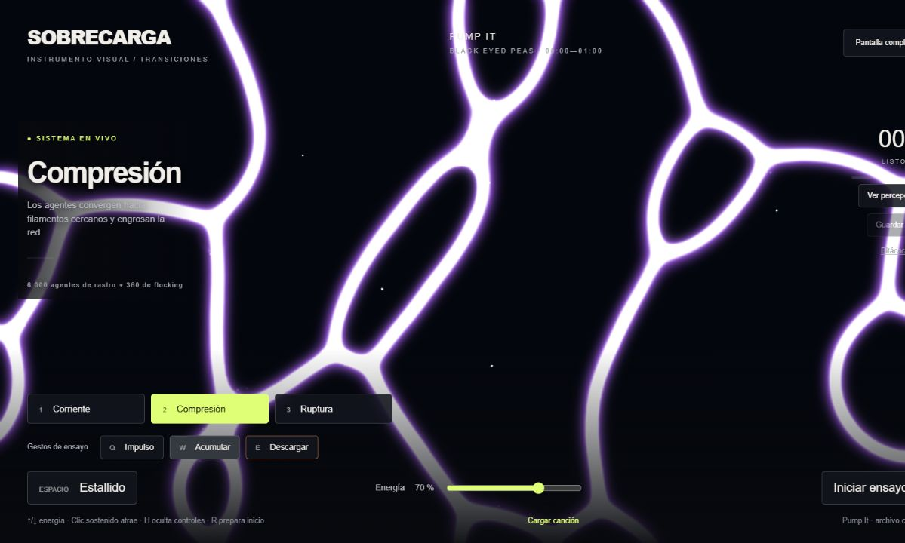
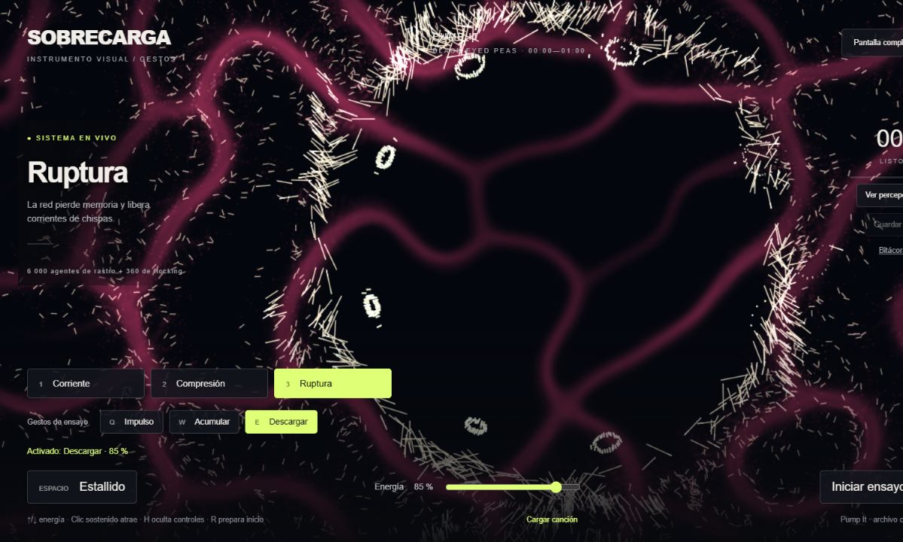

UNIDAD 6 · VERSIÓN TRANSICIONES
Acumula.
Descarga.
Reorganiza.
Interpretación individual del primer minuto de Pump It. Los cambios de reglas y colores se mezclan progresivamente; Compresión conserva el movimiento mientras agrupa y refuerza filamentos cercanos.
Tres gestos con un botón
| Gesto | Combinación |
|---|---|
| Q Impulso | Corriente + energía 60 %. Recuperar continuidad azul. |
| W Acumular | Compresión + energía 70 %. Engrosar y reunir filamentos, con brillo violeta. |
| E Descargar | Ruptura + energía 85 % + un estallido desde el cursor o centro visual. |
También puedes pulsar los botones. Basta activar un gesto una vez: se sostiene hasta que decidas cambiar. 1, 2 y 3 cambian solo el modo; ↑/↓ ajusta energía y Espacio añade un acento.
Propuesta para el minuto
Los tiempos orientan el ensayo; escucha para decidir el acento. Se apoyan en una medición previa de intensidad, no en una transcripción musical confirmada.
| Tramo aproximado | Intervención posible |
|---|---|
| 0:00–0:05 | R prepara Corriente al 40 %. P inicia la canción. |
| 0:05–0:13 | Q: sostener impulso. |
| 0:13–0:18 | W: dar unos segundos para que se lea la acumulación. |
| En un acento cerca de 0:18 | E: descargar. Sostener el resultado hacia 0:30. |
| 0:30–0:40 | Q: reconstruir continuidad. |
| 0:40–0:45 | W: preparar la segunda acumulación. |
| En un acento cerca de 0:45 | E: descargar y observar el resultado. |
| Cerca de 0:58 | Espacio opcional para el último acento. |
Si el sistema necesita más tiempo para reorganizarse, sostén el estado y ajusta el siguiente gesto. Evita perseguir el reloj o disparar repetidamente.
Ensayar y guardar
- Carga tu canción desde tu equipo; el audio se detiene al minuto.
- Usa F para pantalla completa y H para ocultar controles.
- Después del ensayo, abre Guardar ensayo y copia o descarga las acciones con sus tiempos.
- Escribe qué buscabas, qué observaste y qué mejorarás. Completa tu autoevaluación con esas evidencias.
Cómo se forma la red
6000 agentes Physarum leen tres sensores de rastro. En Compresión usan sensores más lejanos, giros menores y mayor difusión, y moderan el depósito en zonas saturadas para conservar conexiones. Los rastros se difunden y evaporan. Otros 360 agentes usan flocking y campo de flujo; D muestra su percepción. Las redes son estructuras emergentes, sin aprendizaje neuronal.
La transición alcanza aproximadamente el 95 % del nuevo estado en 1,2 segundos de tiempo activo. En equipos con pocos cuadros por segundo puede tardar más. R reinicia el estado y conserva el registro del último ensayo.
Capturas de ejecución durante las iteraciones
Evidencias reales de las pruebas de desarrollo. Muestran distintas versiones del instrumento; no corresponden a una grabación continua ni sustituyen un ensayo musical personal.




Carga y cámara
Mantén Espacio y suelta: la carga crece hasta 1,4 segundos y duplica como máximo el impulso. La cámara acompaña con acercamiento y sacudida breves. Corriente mantiene flujo azul; Compresión refuerza conexiones violetas y Ruptura dispersa chispas cálidas.
Autoevaluación
Valoración del estudiante: 25/25 en cada uno de los cuatro criterios, total 100/100. Evidencias y límites en la bitácora.
Entrega
Ensayo personal con la canción, reflexión y autoevaluación; revisar y publicar la bitácora y el instrumento. Las pruebas del asistente no sustituyen tu interpretación.